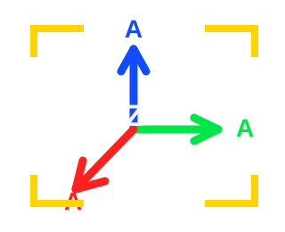

Team Project
Neko Moto
2D action platformer level design, tutorial flow, trap placement, and team implementation support.
Open Case →Level Designer focused on FPS spaces, combat pacing, and readable player flow.
I build readable combat spaces and player experiences through blockout, iteration, spatial clarity, and moment-to-moment level design.

Explore team, single-player, multiplayer, and research-focused level design work.
2D action platformer level design, tutorial flow, trap placement, and team implementation support.
Open Case →Half-Life 2 level focused on atmospheric horror, environmental hazards, combat spaces, and readable progression.
Open Case →Half-Life 2 prison level focused on layered combat spaces, containment, route changes, and escalating encounter pressure.
Open Case →A symmetrical capture-the-flag arena focused on layered routes, midfield risk, item control, and vertical combat.
Open Case →Define player intention, objective structure, core spatial problem, and expected combat rhythm.
Build testable geometry early, then evaluate routes, sightlines, verticality, cover, and player readability.
Use playtest feedback to refine pacing, navigation, encounter pressure, and objective clarity.